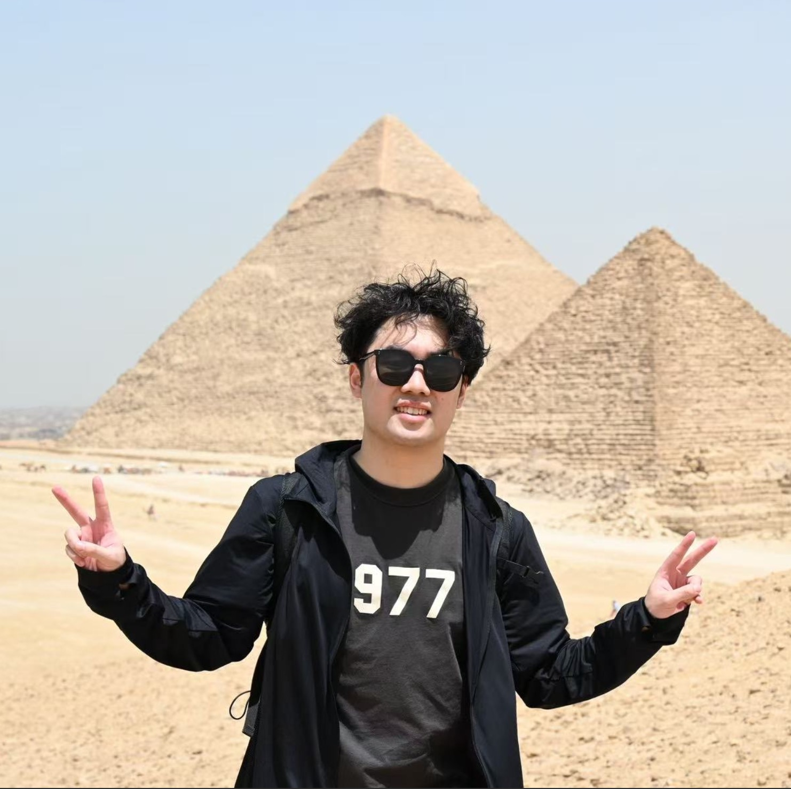
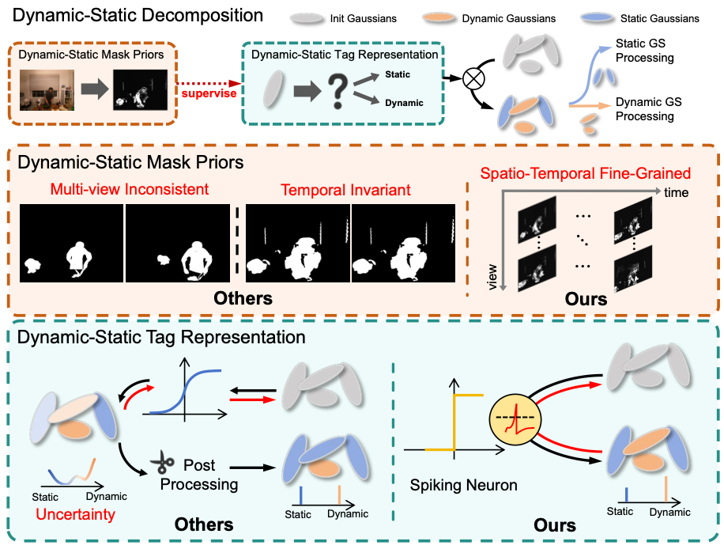
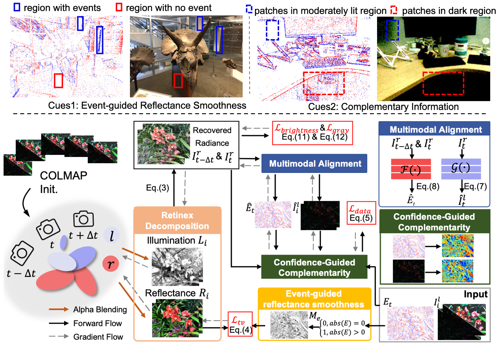
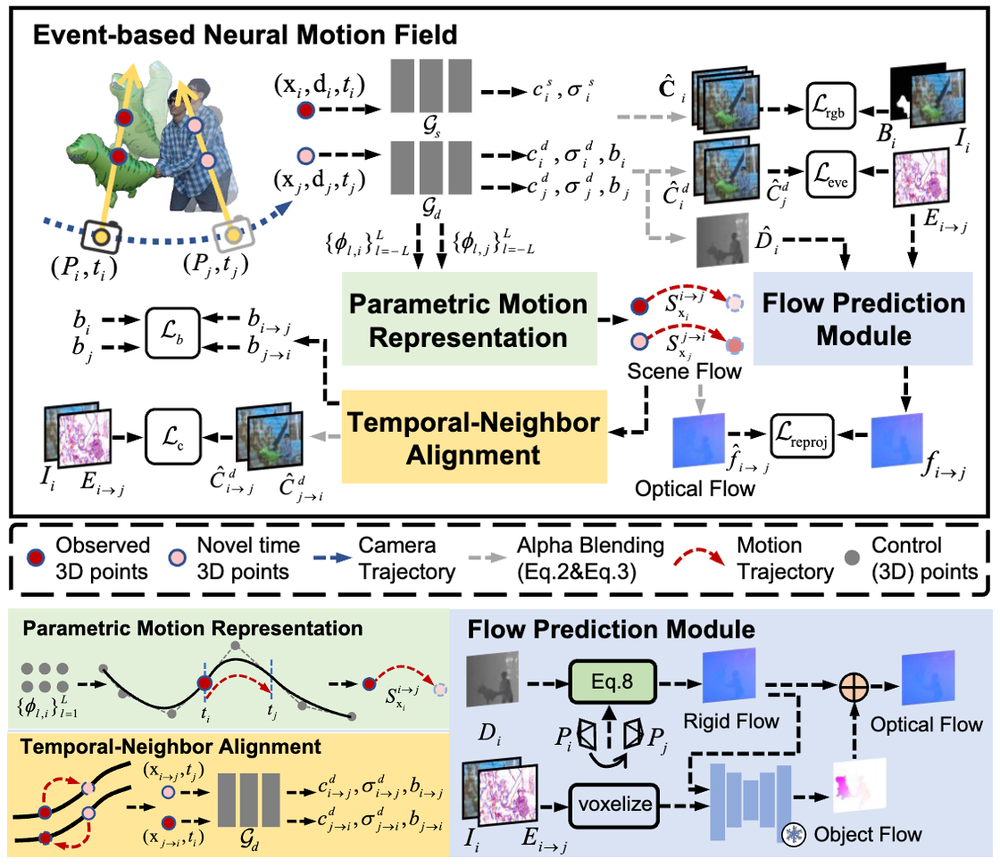
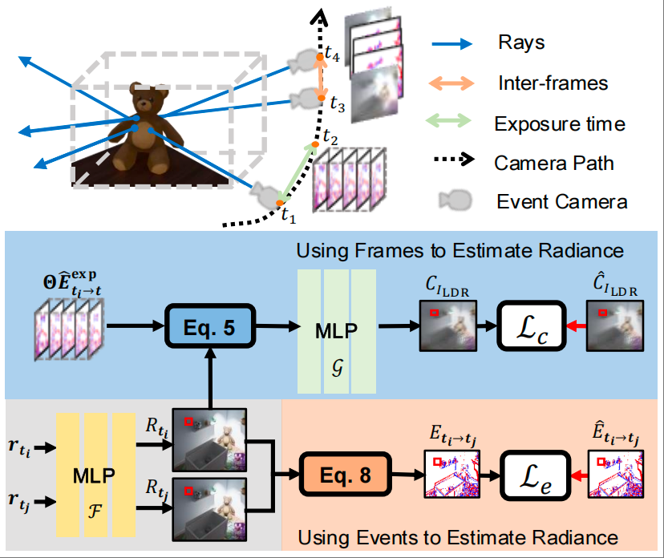
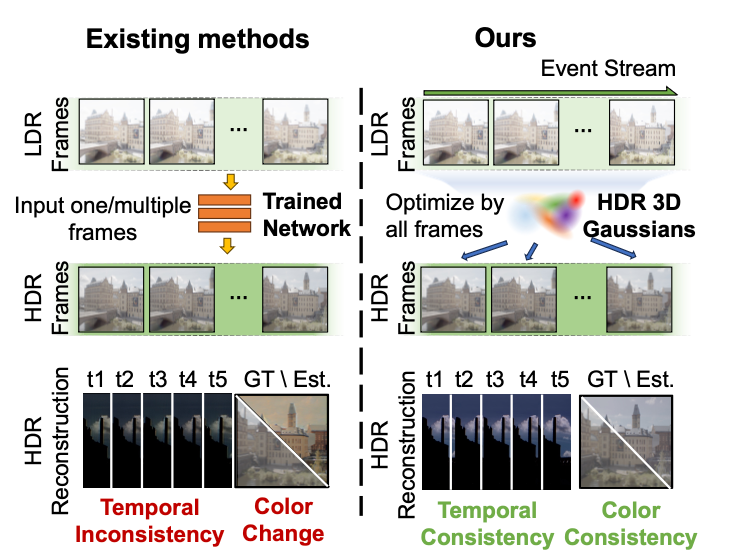
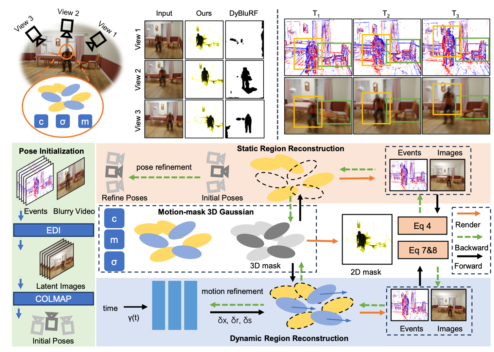
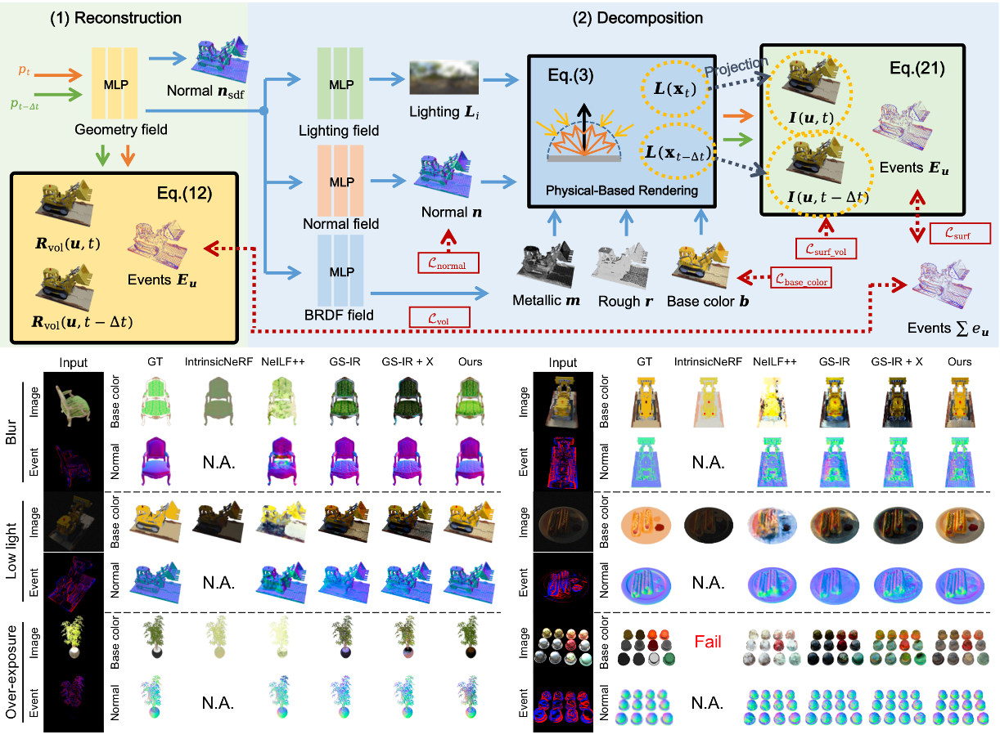
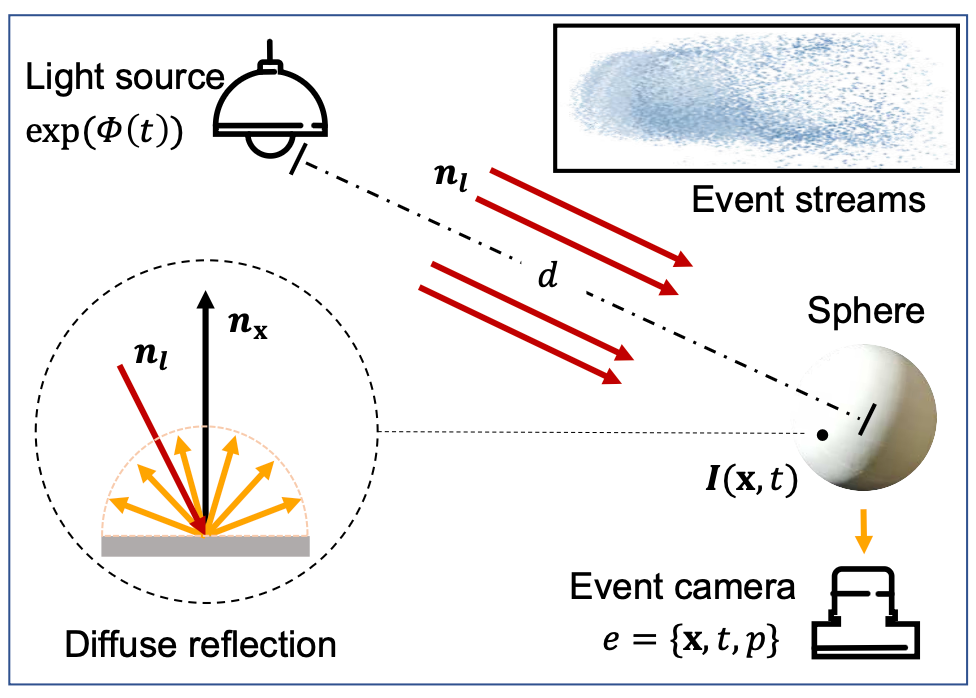

Zehao Chen
Postdoctoral Fellow
College of Computer Science and Technology,
The State Key Laboratory of Brain-Machine Intelligence,
Zhejiang University, Hangzhou, China.
I am currently a postdoctoral fellow at the State Key Laboratory of Brain-Machine Intelligence, Zhejiang University. I received my Ph.D. from Zhejiang University, where I conducted my doctoral research at the same laboratory under the supervision of Prof. Gang Pan and Prof. Qian Zheng. In 2025, I was selected for the Postdoctoral Innovation Talent Support Program. My research focuses on neuromorphic computing, with an emphasis on developing brain-inspired computational paradigms that emulate the brain’s efficient, adaptive, and event-driven processing for spatial perception.

📚 Selected Works
|
 |
Dynamic-Static Decomposition for Novel View Synthesis of Dynamic
Scenes with Spiking Neurons
The IEEE/CVF Conference on Computer Vision and Pattern Recognition
(CVPR), Jun 2026
[Project]
A discontinuous dynamic–static tagging field based on spiking
neurons (SNs), reducing uncertainty-induced misclassification near
object boundaries.
|
|
 |
eRetinexGS: Retinex Modeling for Low-Light Scene Enhancement via
Event Streams and 3D Gaussian Splatting
The IEEE/CVF Conference on Computer Vision and Pattern Recognition
(CVPR), Jun 2026
[Project]
Two cues of event-guided low-light enhancement; a framework
combining Retinex decomposition with 3D Gaussian Splatting.
|
|
 |
E-NeMF: Event-based Neural Motion Field for Novel Space-time View
Synthesis of Dynamic Scenes
International Conference on Computer Vision
(ICCV), Oct 2025
Event-guided dynamic scene reconstruction from a monocular
event–frame video; accurate complex motion with robustness to event
noise and sparsity.
|
|
 |
EvHDR-NeRF: Building High Dynamic Range Radiance Fields with Single
Exposure Images and Events
Proceedings of the AAAI Conference on Artificial Intelligence
(AAAI), Feb 2025
Event-guided HDR radiance field reconstruction from a monocular,
single-exposure event–frame video; faithful camera response
function (CRF) recovery.
|

|
EvSTVSR: Event Guided Space-Time Video Super-Resolution
Proceedings of the AAAI Conference on Artificial Intelligence
(AAAI), Feb 2025
Fewer is Better: fewer adjacent frames (with event
streams) yield better space–time video super-resolution.
|
|
 |
Event-guided HDR Video Reconstruction with 3D Gaussian Splatting
Proceedings of the AAAI Conference on Artificial Intelligence
(AAAI), Feb 2025
[Project]
A scene-based approach to HDR video reconstruction that addresses
inter-frame brightness inconsistency.
|
|
 |
EDyGS: Event Enhanced Dynamic 3D Radiance Fields from Blurry Monocular
Video
International Joint Conference on Artificial Intelligence
(IJCAI), Aug 2025
[Paper]
Exploits multi-view relationships in event streams to disentangle
camera motion and object motion.
|
|
 |
Event-ID: Intrinsic Decomposition Using an Event Camera
ACM International Conference on Multimedia
(MM), Oct 2024
Event-guided intrinsic decomposition from an event–frame video:
geometry, materials, lighting recovery, and relighting. Specular
(highlight) cues are obtained from multi-view relationships in event
streams.
|
|
 |
Indoor Lighting Estimation using an Event Camera
Proceedings of the IEEE/CVF Conference on Computer Vision and Pattern Recognition
(CVPR), Jun 2021
[Project]
Event-camera setup for indoor lighting estimation; mitigates
intensity–distance ambiguity and improves estimation for nearby
lights.
|